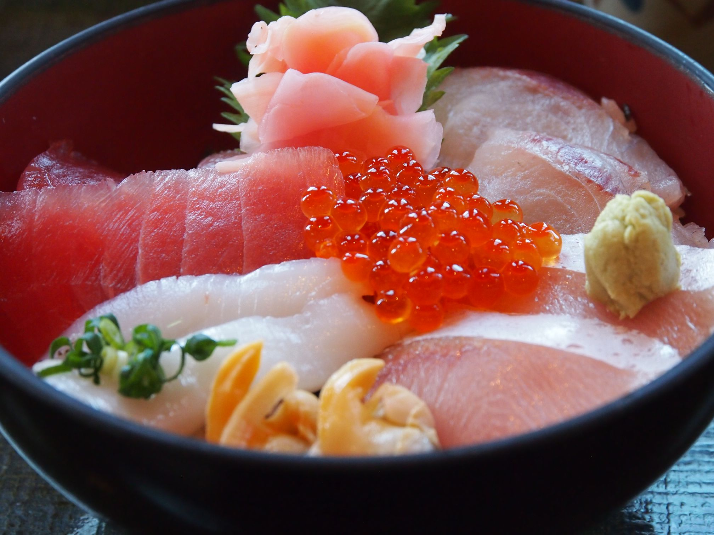
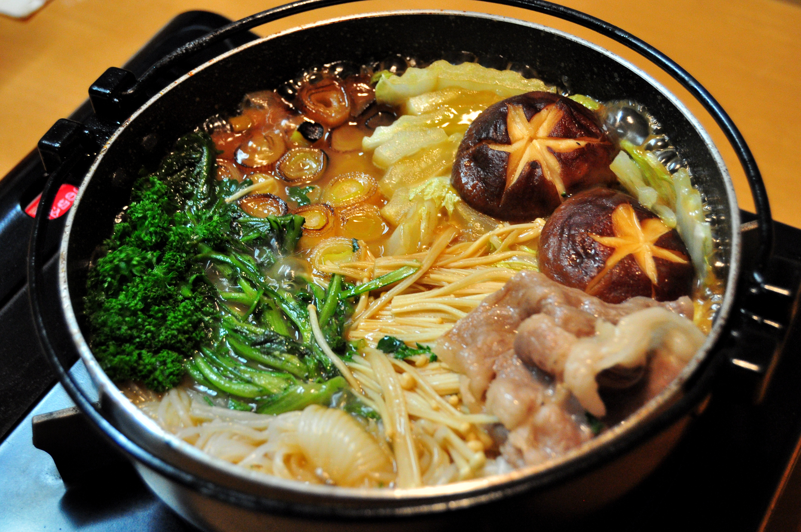

海鮮丼
海鮮丼は、新鮮な魚介をたっぷりと盛り付けた日本の代表的な丼料理です。
まぐろ・サーモン・いくらなど、季節や地域によってさまざまな具材が使われ、 素材そのものの旨みを楽しめるのが魅力です。 醤油やわさびを少し添えるだけで、シンプルながら贅沢な味わいになります。

すき焼き
すき焼きは、甘辛い割り下で牛肉や野菜を煮込む、日本の伝統的な鍋料理です。
砂糖・醤油・みりんを合わせた味付けが特徴で、 肉の旨みと野菜の甘みが溶け合い、濃厚で満足感のある味わいになります。 地域によって作り方が異なり、関東は「割り下を使う」、関西は「肉を焼いてから調味する」などの違いがあります。